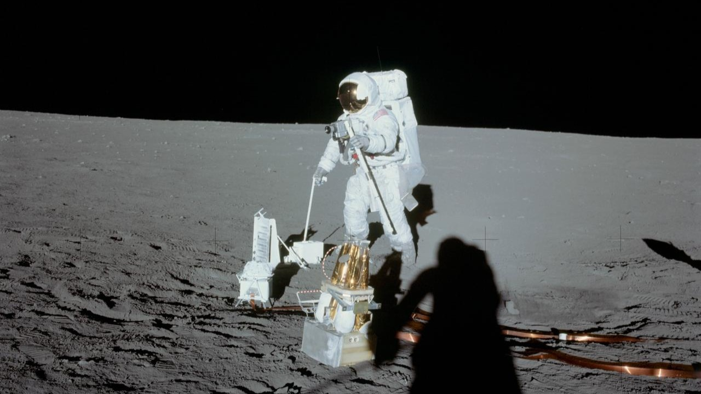
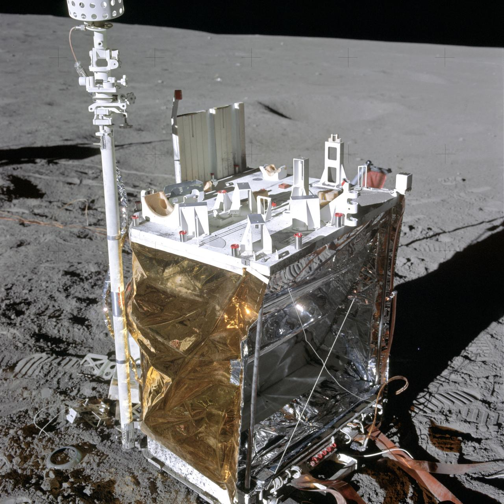

The Apollo Lunar Surface Experiments Package (ALSEP) was a collection of scientific instruments placed on the Moon by astronauts during the Apollo missions. These instruments formed an automated science station that continued working even after the astronauts had returned to Earth.
Each ALSEP station contained different instruments designed to investigate the Moon's physical environment. A central station collected information from the instruments and transmitted scientific data back to Earth. This allowed scientists to study the Moon from a distance for several years.
ALSEP stations were deployed by astronauts during the Apollo 12, 14, 15, 16 and 17 missions between 1969 and 1972. Each mission carried a different combination of scientific instruments according to its research objectives.
The instruments were designed to measure moonquakes, investigate the Moon's magnetic field, study heat flow beneath the lunar surface and observe particles from the Sun. Unlike ordinary equipment used only during an astronaut's visit, ALSEP was designed to continue collecting information long after the astronauts had departed.
The stations used radioisotope thermoelectric generators to produce electrical power, allowing them to operate without depending on sunlight.
ALSEP collected valuable scientific data that helped scientists understand the Moon's interior and surrounding environment. Its seismometers recorded moonquakes and vibrations caused by meteorite impacts, helping researchers investigate the structure of the lunar interior.
Other instruments measured heat flowing from beneath the lunar surface, studied variations in the Moon's magnetic field and observed particles from the solar wind. These experiments provided information that could not have been obtained through photographs alone.
The data collected by ALSEP became an important resource for understanding the Moon and planning future lunar exploration.
The ALSEP instruments continued transmitting scientific data to Earth for several years after the Apollo astronauts had left the Moon. The first four ALSEP stations were designed to operate for at least one year, while the Apollo 17 station was designed for at least two years. However, several instruments continued working beyond their expected lifetimes.
NASA officially ended ALSEP operations on September 30, 1977, bringing the programme to a close. The instruments were switched off, but their equipment was left behind at the Apollo landing sites.
Today, the ALSEP stations remain on the lunar surface as reminders of the Apollo missions and an important part of the history of lunar science.

Astronaut Alan L. Bean deploys components of the Apollo Lunar Surface Experiments Package (ALSEP) during the first Apollo 12 extravehicular activity (EVA) on the Moon. The photograph was taken by astronaut Charles Conrad Jr. on November 19, 1969.
Image Credit: NASA/JSC | NASA Image Source (AS12-47-6919)

A close-up view of the Apollo Lunar Surface Experiments Package (ALSEP) Central Station, deployed by Apollo 14 astronauts during their first extravehicular activity (EVA) on the Moon. The photograph was taken on February 5, 1971.
Image Credit: NASA/JSC | NASA Image Source (AS14-67-9379)